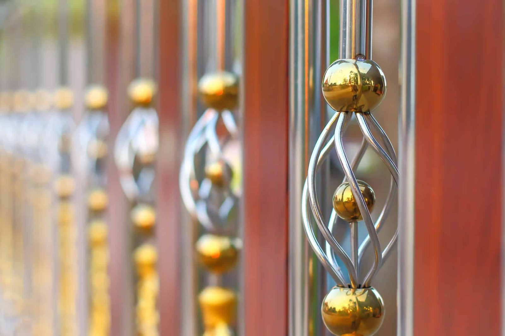

In This Guide
- The main fence metals are aluminum, steel, galvanized steel, wrought or cast iron, and stainless steel. Copper and brass exist but are rare.
- Aluminum is light and does not rust. Steel and iron are heavier and stronger but rely on their coating to resist rust.
- A comparison table below sets each metal side by side on rust behavior, weight, and typical look.
- Choose by purpose, style, upkeep you will accept, and the coating, since the finish often matters as much as the metal.
Metal fencing is a family of materials, not a single product. Aluminum, steel, and iron all make good fences, and each behaves differently in Louisiana weather. This guide takes the types one at a time, compares them in a table, and explains how to choose.
Big Easy Fence installs several of these as metal fences for New Orleans homes, and the details below reflect what matters on a real property: weight, rust, and finish.
Metal Fence Types at a Glance
The table gives a quick comparison. Details on each metal follow.
| Metal | Rust Behavior | Weight and Strength | Typical Look |
|---|---|---|---|
| Aluminum | Does not rust; the finish protects it | Light, moderate strength | Ornamental or modern, many colors |
| Steel | Rusts if the coating fails | Heavy, very strong | Plain or ornamental, painted or coated |
| Galvanized Steel | Zinc coating slows rust | Heavy, very strong | Silver-gray, or painted over |
| Wrought or Cast Iron | Rusts without paint or coating | Very heavy | Traditional and ornate |
| Stainless Steel | Resists rust; can stain in harsh air | Heavy, strong | Polished and modern |
The Main Metals, One at a Time
Aluminum
Aluminum is the lightweight option. It is easy to fabricate into panels, comes in many colors, and does not rust because it contains no iron. A powder-coated finish protects the look. It is not as strong as steel, so security-focused designs may call for a heavier gauge. Our aluminum fence page has more.
Steel
Steel is strong and versatile, and it is the base for most heavy-duty fence panels, posts, and gates. Because it contains iron, it needs a coating. Painted or powder-coated steel is common, and it holds up well as long as the coating is maintained. See steel fencing for details.
Galvanized Steel
Galvanized steel has a zinc coating that slows rust. It is common in wire panels, posts, and utility fences, and it can be painted for a cleaner look. Zinc wears down over time, faster in constant moisture or salty air.
Wrought and Cast Iron
Iron is the classic ornamental metal. It is heavy and can be shaped into detailed scrollwork. Most of what is sold as wrought iron today is fabricated mild steel, which acts like painted steel. Cast iron is more brittle and can crack if struck. Both need regular paint touch-ups.
Stainless Steel
Stainless steel resists rust much better than plain steel and can be polished for a bright finish. It is rarely used for full residential fences, and it appears more often in railings, accents, and decorative details.

Copper and Brass
Copper and brass are attractive, but they are rare as full fences. They contain no iron and do not rust, though they tarnish and develop a patina over time. They generally cost more than steel or aluminum, and the material can be soft, so they suit accents, gates, and decorative parts better than long fence runs.
Chain Link Is a Metal Fence Too
Chain link is woven steel wire, usually galvanized and sometimes vinyl-coated. It is practical, quick to install, and gives clear sightlines. It is the plainest metal fence, and it rarely gets picked for looks, though a coated version can blend into a yard more than people expect.
How Rust Changes the Choice
Rust behavior is the biggest difference between metal types. Aluminum and copper alloys do not rust. Steel, galvanized steel, and iron rely on their coating, so the choice is a matter of how much upkeep you will do. The full story is in our guide on whether metal fences rust.
A well-coated steel fence holds up far better than a poorly coated one, and a badly applied finish on any metal fails early. Ask what finish is used and how it is repaired.
How to Choose the Right Metal
Work through these questions before you pick a metal.
What Is the Fence For?
Security and containment favor steel or heavy iron. Boundary marking and curb appeal work well with aluminum.
What Style Do You Want?
Ornate scrollwork suits iron or steel, and modern lines suit aluminum or slat panels.
How Much Upkeep Will You Do?
Aluminum needs washing and occasional touch-ups. Steel and iron also need the finish checked and repaired on a schedule.
What Are the Local Rules?
Height limits, materials, and design rules can come from your city or parish and your HOA. Check with both before you order.
Getting a Quote
Bring photos of your yard, a sketch of where the fence will run, and a note on what you want it to do. A crew can then recommend a metal and finish that fit the property, and quote more than one option for comparison.
Which Metal Fits Your Property?
Tell us what the fence has to do and where it will stand. We will help you narrow the metals and finishes.